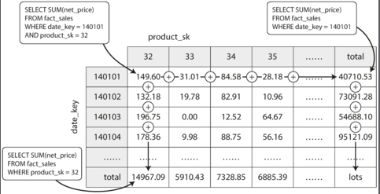

什麼是 OLTP、OLAP 和 DW
一般來說，資料庫對於服務使用者來說，即是在一群資料中找出特定資料，做讀寫的動作。這種操作，稱為線上交易處理（online transaction processing，OLTP）。
早期資料庫的操作幾乎是商務交易，所以保留舊稱「交易」（transaction）。
然而，隨著資料的增加，開始需要對資料庫做一些分析。幫助服務管理者去做一些特定的決策，例如：
- 購物者在一天中購買的時間分佈
- 哪個商品賣最好
這一類的行為，常常需要針對所有的資料做讀取，而不需要寫入。我們稱之為線上分析處理（online analytic processing，OLAP）。
針對這種和 OLTP 的操作有很大差異的資料，而去做設計的資料庫，我們稱之為資料儲倉（Data Warehouse，DW）。
有時候並不是那麼清楚就可以區分 OLTP 和 OLAP，但是仍有一些主要的差異：
| 屬性 | OLTP | OLAP |
|---|---|---|
| 主要的讀取模式 | 小量資料，且透過 key 篩選 | 聚合（aggregate）大量資料 |
| 主要的寫入模式 | 低潛時（latency ），且隨機寫入 | 一次性大量寫入，或透過事件流入 |
| 主要使用於 | 透過網路溝通的服務使用者 | 內部分析師，幫助決策 |
| 資料代表什麼 | 最新狀態 | 事件的歷史紀錄 |
| 資料庫大小 | GB~TB | TB~PB |
比較
OLTP 類型資料庫通常是服務使用者直接接觸的。這代表大量的請求會被需要處理，為了處理這類需求，請求通常只會接觸資料庫中一部份資料。應用程式可能會透過索引（index）來加速搜尋。這類的資料庫通常注重從磁碟中找尋的速度（seek time，找尋特定資料位置的速度）。
OLAP 類型資料庫較少被知道，因為這類型資料庫是用來做分析，而非讓服務使用者直接存取。雖然請求量比 OLTP 低，但是每次請求可能都需要遍歷資料庫來取得特定分析結果。這類的資料庫通常注重從磁碟中的頻寬（bandwidth，讀取大量資料的速度）。
Data Warehouse
對於公司來說可能會有很多資料庫去滿足各個單位的需求。這些資料庫很可能彼此是各自獨立的，但卻都是在替同一群使用者。例如：人力銀行的
- 求職者履歷資料庫
- 求職者的性向測驗
除此之外，這些資料庫為了滿足 OLTP 低潛時性，當你要下指令去搜集全域的資訊時，你很可能會被 DBA 拒絕。為了同時滿足線上使用者高效率的運作和分析師的數據爬取，這時資料儲倉（Data Warehouse，DW）便出現了。
其特性會把所有不同服務的資料，定時（periodic data dump）或持續（continuous stream of updates）從資料庫中擷取資料。並存入適合分析的綱目（schema），做一些重複資料的清理等等。這一系列的行為稱作萃取、變換及載入（Extract–Transform–Load，ETL）。

我們之前學到的索引（index）演算法，並不適合這類分析性的行為。所以雖然大部分 DW 都是關連式資料庫，其內部運算邏輯卻和常見的 OLTP 關連式資料庫不同。目前也越來越多資料庫針對不同場域做特定的優化，也就是很少會看到一個資料庫同時滿足 OLTP 和 OLAP。
一些 DW 資料庫
- 收費的
- 開源的 SQL-on-Hadoop 專案
綱目
DW 可能的綱目（schema）設計有兩種：
- 星狀綱目（star schema）
- DW 的資料和其他資料庫的資量關系，樣子就好像星星發出來的光一樣
- 雪花綱目（snowflake schema）
- 資料和資料的關係層層交疊
星狀綱目
以書中範例做介紹：

在細看這些資料代表的意義之前，先注意到表（table）的前綴詞有兩種：
dim對資料提供維度（dimension）的表fact展示所有狀態的表，事實表
以上述圖片為例子，產品、商店、顧客、日期、推廣活動等等就是提高事實表維度的資料庫。而 fact_sales 就是銷售相關的事實表，或者說該表紀錄了所有銷售相關的行為（事件）。
儘管有些是對照其他表的外區鍵（foreign key），但仍有很多欄位是相關行為（事件）的屬性，例如：該「顧客」於該「商店」購買該「產品」的數量、原價、售價等等。由此可知，若提供細節信息，該表格將會有非常多的欄位，或者說屬性（property），甚至可能到數百種屬性。
雪花綱目
類似於星狀綱目，只是他的維度表可能會有很多層，例如：「產品表」又會有外區鍵連到「品牌表」和「種類表」。
比較
大部分資料庫選擇使用星狀綱目，因為其
- 好擴充，例如：當有新的種類，就不用同時去改種類表和產品表
- 適合壓縮和優化搜尋速度（透過 Bitmap Index），後面會介紹
- 好調整，新增屬性時，不需要考慮放在哪個表比較適合
- 較好理解，不用層層堆砌，層層解析
列式資料庫
在一般 OLAP 中，只會讀取部分欄位，以上述表格為例：在假日購買特定種類的數量：
SELECT
dim_date.weekday, dim_product.category,
SUM(fact_sales.quantity) AS quantity_sold
FROM fact_sales
JOIN dim_date ON fact_sales.date_key = dim_date.date_key
JOIN dim_product ON fact_sales.product_sk = dim_product.product_sk
WHERE
dim_date.year = 2013 AND
dim_product.category IN ('Fresh fruit', 'Candy')
GROUP BY
dim_date.weekday, dim_product.category;
由此例可知，在該特性下，若每次操作僅拿取部分資料做運算，是否有必要做功讓其他欄位的資料一起從磁碟（disk）中讀取出來？
尤其是在資料量有好幾 PB，而每一行可能有好幾百個屬性時，這類「小缺點」將會被放大。
列式資料庫（column-oriented storage）的概念就是由此而生，我不以每列為單位做儲存，而是改為每欄為單位。這樣在讀取時，就只需要讀取少部分的資料。
並非只有關連式資料庫適合做列式資料庫，僅僅因為關連式資料庫在講解上是最好理解的。Parquet 就是一個以 Google's Dremel paper 為基礎的文件式資料庫。
這同時也代表，每一欄位都需要擁有相同順序和數量的行位，而這條件在 OLAP 是符合的，因為其不會刪除任一行資料。
壓縮
好的資料壓縮，可以降低在讀取海量資料的時間，而 OLAP 還有個特性，就是欄位可能的值是有限的。例如：產品數量可能只有數萬或數十萬個，但是購物操作卻可能每年有好幾億筆。
因此，以操作為欄，產品編號為列，可得下表：
| 產品編號 | 操作 1 | 操作 2 | 操作 3 | ... |
|---|---|---|---|---|
| 1 | 1 | 0 | 1 | ... |
| 2 | 0 | 1 | 0 | ... |
| 3 | 0 | 0 | 0 | ... |
| ... | - | - | - | ... |
其意義代表：
操作 1購買產品 1操作 2購買產品 2操作 3購買產品 1- ...
此時並不能壓縮資料，事實上，他只是把各操作的各產品編號，展開成二進位而已。也就是，位元映射（bitmap encoding）。然而，因為 OLAP 的特性讓每列有多個為 0 的欄位，此時就可以透過執行長度編碼（run-length encoded）進行壓縮。

而展開成二進位的格式，不止利於壓縮，在計算時，也可以單純透過 OR AND 去做計算。例如：
WHERE product_sk IN (30, 68, 69)
我們讀取產品的位元映射表中的第 30，68 和 69 行，然後拿出三段位元向量（bit vector）做位元間的 OR 運算。
WHERE product_sk = 31 AND store_sk = 3
我們讀取位產品的元映射表中的第 31 行，然後讀取商店的元映射表中的第 3 行做位元間的 AND 運算。
這類操作之所以可以運作，就是因為我們在儲存欄位時，同步所有列的數量和順序。
若需要查看更多壓縮的演算法，可以查看 The Design and Implementation of Modern Column-Oriented Database Systems. Ct4-2。
Column Family 和 Column Oriented 是不同的概念，其被應用於基於 Bigtable 架構的資料庫 Cassandra 和 HBase 中。其原理是把部分列（column）從行（row）中拉出整合成一個單位，類似於關連式資料庫的表（table），並且不會對這單位進行列壓縮（column compression），因此該模型仍主要是以行式資料庫（row-oriented）為主。
硬體面優化
當進行運算和分析時，系統必須從硬體磁碟（disk）中讀取資料並存進記憶體（memory）中。除了這一段的頻寬需要考量外，還需要考量記憶體進入 CPU 快取中的頻寬。在執行這些行為的訊號時，盡可能避免快取層級的誤判和整合進單一 CPU 運行的大小（page size），並使用現代 CPU 中的 SIMD（single-instruction-multi-data） 指令。
| 指令 | 1/1,000,000,000 秒 = 1 奈秒 |
|---|---|
| 讀取第一層快取 | 0.5 ns |
| 快取層級誤判 | 5 ns |
| 讀取第二層快取 | 7 ns |
| 互斥鎖的加鎖和解鎖 | 25 ns |
| 讀取主記憶體 | 100 ns |
| 在 1Gbps 的網路送出 2KB 的資料 | 20,000 ns |
| 從主記憶體中讀取 1MB 的連續資料 | 250,000 ns |
| 取得磁碟中的新位置（需要搜尋） | 8,000,000 ns |
| 從磁碟中讀取 1MB 的連續資料 | 20,000,000 ns |
| 讓一個封包從美國到歐洲來回 | 150 ms = 150,000,000 ns |
參考：https://hackmd.io/ysFkocN0RreKgzJk_7B-0g?view
除了盡可能減少拉取的資料，每次拉取時也須有效的配合 CPU 的週期。例如，搜尋引擎會把壓縮後的列式資料分成好幾段（chunk），並持續且緊密地（也就是過程中不呼叫任何函示，避免 function call/jump）放進 CPU 第一層快取中。除此之外每一段（chunk）彼此間都可以直接使用電晶體去執行 AND 或 OR 等邏輯運算。
這一系列的技巧稱為向量處理（vectorized processing）。
排序
把資料經過排序後再儲存除了加速搜尋也可以讓長度編碼（run-length encoded）更緊密。例如 00001000100 排序後變成 1,2,0,9。
可以透過之前提過的 SSTable 來做排序，需要注意的是，雖然是把每列作為儲存單位，在排序時仍要讓該行的各列資料同時保持相同順序。
但是，排序的效果僅在做第一組資料排序最有效，例如：
若發現常常使用日期單位做搜尋，如每月的購買產品總數，則可以使用 date_key。但是對於以產品為底的搜尋，如購買該產品的會員年齡就沒有使用到排序的好處。這時就發展出新的小技巧。例如 Vertica 的資料庫：
反正資料都要做備份（和 HA）複製到各機器，你就可以把各機器的資料做不同方式去儲存。例如資料庫 A 以日期作為 sort key，資料庫 B 以產品作為 sort key。
可以想像其和行式資料庫的多索引的差異。行式資料庫在多索引中，常常會在索引中儲存檔案的來源，例如 heap file 等等。而列式資料庫則直接儲存資料
暫存聚合
搜尋時，常常會用到聚合（aggregation）資料，例如總數（sum）、平均（avg）等等。而這類操作常常都需要遍歷資料庫，既然這些資料很耗時又需要常常用到，就暫存他吧。這類暫存後的聚合資料，稱為物化聚合（materialized aggregates），而展示這類資料的圖或表（table）稱為物化視圖（materialized view）。
物化視圖和關連式資料庫常見的標準視圖（standard/virtual view）有所差異，標準視圖只是把查詢記錄整合在一起，當被使用時，仍然會執行其中一系列的查詢。

圖中展示，二維資料在做物化整合時的方式。每一個單元（cell）儲存某一天的某一個產品銷售總額，行尾儲存某一天的所有產品銷售總額，列尾儲存某一產品的所有銷售總額。
當然，資料更可能被進行多維度的儲存，例如購物者的年齡等等。
寫入
上述提到的壓縮、硬體優化、排序、暫存聚合都是在提高讀取效率，雖然這實際就是資料儲倉大部分的業務需求，但在從各個子資料庫中拉取資料時仍需要寫入。該怎麼做到有效的寫入呢？
可以透過先前提到的 LSM-Tree，分成磁碟上的資料和記憶體中的資料，記憶體的資料方便做排序和插入。當記憶體達到一定大小後，寫入磁碟中。而磁碟中的資料定期做整合和壓縮。Vertica 的資料庫便是依此方式。
從這也可以看到 LSM-Tree 對於資料庫的演算法有很重大的影響。